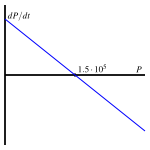
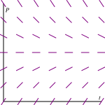

How can we use differential equations to describe phenomena in the world around us?
How can we use differential equations to better understand these phenomena?
We have seen several ways that differential equations arise in the natural world, from the growth of a population to the temperature of a cup of coffee. In this section, we look more closely at how differential equations give us a natural way to describe various phenoma. As we'll see, the key is to understand the different factors that cause a quantity to change.
Preview Activity7.5.1.
(a) Suppose you have a bank account in which money grows at an annual rate of 3 percent.
If you have 10,000 dollars in the account, at what rate is your money growing?
Rate of change = dollars/year
Suppose that you are also withdrawing money from the account at $1,000 per year. What is the net rate of change in the amount of money in the account?
Rate of change = dollars/year
(b) Suppose that a water tank contains 100 gallons of salt water and that a salty solution, which contains 20 grams of salt in every gallon, enters the tank at 2 gallons per minute.
How much salt enters the tank each minute?
Rate of salt entering = grams/minute
Suppose that initially there are 300 grams of salt in the tank. How much salt is in each gallon at this point in time?
Concentration of salt = grams/gallon
Finally, suppose that evenly mixed solution is pumped out of the tank at the rate of 2 gallons per minute. At what rate is the salt leaving the tank?
Rate of salt leaving = grams/minute
What is the net rate of change in the amount of salt in the tank?
Rate of change = grams/minute
Subsection7.5.1Developing a differential equation
Preview Activity 7.5.1 demonstrates the kind of thinking we will be doing in this section. In each of the two examples we considered, there is a quantity, such as the amount of money in the bank account or the amount of salt in the tank, that is changing due to several factors. The governing differential equation states that the total rate of change is the difference between the rate of increase and the rate of decrease.
Example7.5.1.
In the Great Lakes region, rivers flowing into the lakes carry a great deal of pollution in the form of small pieces of plastic averaging 1 millimeter in diameter. In order to understand how the amount of plastic in Lake Michigan is changing, construct a model for how this type pollution has built up in the lake.
The volume of the lake is \(5\cdot10^{12}\) cubic meters.
Water flows into the lake at a rate of \(5\cdot10^{10}\) cubic meters per year. It flows out of the lake at the same rate.
Each cubic meter flowing into the lake contains roughly \(3\cdot10^{-8}\) cubic meters of plastic pollution.
Let's denote the amount of pollution in the lake by \(P(t)\text{,}\) where \(P\) is measured in cubic meters of plastic and \(t\) in years. Our goal is to describe the rate of change of this function; so we want to develop a differential equation describing \(P(t)\text{.}\)
First, we will measure how \(P(t)\) increases due to pollution flowing into the lake. We know that \(5\cdot10^{10}\) cubic meters of water enters the lake every year and each cubic meter of water contains \(3\cdot10^{-8}\) cubic meters of pollution. Therefore, pollution enters the lake at the rate of
\begin{equation*}
\left(5\cdot 10^{10} \frac{m^3 \text{ water} }{\text{year} }\right) \left(3\cdot10^{-8} \frac{m^3 \text{ plastic} }{m^3 \text{ water} } \right) = 1.5\cdot 10^3
\text{cubic m of plastic per year}\text{.}
\end{equation*}
Second, we will measure how \(P(t)\) decreases due to pollution flowing out of the lake. If the total amount of pollution is \(P\) cubic meters and the volume of Lake Michigan is \(5\cdot 10^{12}\) cubic meters, then the concentration of plastic pollution in Lake Michigan is
\begin{equation*}
\frac{P}{5\cdot10^{12}} \text{cubic m of plastic per cubic m of water}\text{.}
\end{equation*}
Since \(5\cdot10^{10}\) cubic meters of water flow out each year 1 , then the plastic pollution leaves the lake at the rate of
\begin{equation*}
\left(\frac{P}{5\cdot10^{12}} \frac{m^3 \text{ plastic} }{m^3 \text{ water} } \right) \left(5\cdot10^{10} \frac{m^3 \text{ water} }{\text{year} } \right)=\frac{P}{100}
\text{cubic m of plastic per year}\text{.}
\end{equation*}
The total rate of change of \(P\) is thus the difference between the rate at which pollution enters the lake and the rate at which pollution leaves the lake; that is,
We have now found a differential equation that describes the rate at which the amount of pollution is changing. To understand the behavior of \(P(t)\text{,}\) we apply some of the techniques we have recently developed.
Because the differential equation is autonomous, we can sketch \(dP/dt\) as a function of \(P\) and then construct a slope field, as shown in Figure 7.5.2 and Figure 7.5.3.
Figure7.5.2.Plot of \(\frac{dP}{dt}\) vs. \(P\) for \(\frac{dP}{dt} = \frac{1}{100}(1.5\cdot10^{5} - P)\text{.}\)
Figure7.5.3.Plot of the slope field for \(\frac{dP}{dt} = \frac{1}{100}(1.5\cdot10^{5} - P)\text{.}\)
These plots both show that \(P=1.5\cdot10^5\) is a stable equilibrium. Therefore, we should expect that the amount of pollution in Lake Michigan will stabilize near \(1.5\cdot10^5\) cubic meters of pollution.
Next, assuming that there is initially no pollution in the lake, we will solve the initial value problem
Superimposing the graph of \(P\) on the slope field we saw in Figure 7.5.3, we see, as shown in Figure 7.5.4
We see that, as expected, the amount of plastic pollution stabilizes around \(1.5\cdot10^5\) cubic meters.
Figure7.5.4.The solution \(P(t)\) and the slope field for the differential equation \(\frac{dP}{dt} = \frac{1}{100}(1.5\cdot10^{5} - P)\text{.}\)
There are many important lessons to learn from Example 7.5.1. Foremost is how we can develop a differential equation by thinking about the “total rate = rate in - rate out” model. In addition, we note how we can bring together all of our available understanding (plotting \(\frac{dP}{dt}\) vs. \(P\text{,}\) creating a slope field, solving the differential equation) to see how the differential equation describes the behavior of a changing quantity.
We can also explore what happens when certain aspects of the problem change. For instance, let's suppose we are at a time when the plastic pollution entering Lake Michigan has stabilized at \(1.5\cdot10^5\) cubic meters, and that new legislation is passed to prevent this type of pollution entering the lake. So, there is no longer any inflow of plastic pollution to the lake. How does the amount of plastic pollution in Lake Michigan now change? For example, how long does it take for the amount of plastic pollution in the lake to halve?
Resetting \(t=0\) at this time, we now have the initial value problem
It is a straightforward and familiar exercise to find that the solution to this equation is \(P(t) = 1.5\cdot10^5
e^{-t/100}\text{.}\) The time that it takes for half of the pollution to flow out of the lake is given by \(T\) where \(P(T) = 0.75\cdot10^5\text{.}\) Thus, we must solve the equation
\begin{equation*}
T = -100\,\ln\left(\frac12\right) \approx 69.3 \text{years.}
\end{equation*}
In the upcoming activities, we explore some other natural settings in which differential equations model changing quantities.
Activity7.5.2.
Suppose you have a bank account that grows by 5% every year. Let \(A(t)\) be the amount of money in the account in year \(t\text{.}\)
What is the rate of change of \(A\) with respect to \(t\text{?}\)
Suppose that you are also withdrawing $10,000 per year. Write a differential equation that expresses the total rate of change of \(A\text{.}\)
Sketch a slope field for this differential equation, find any equilibrium solutions, and identify them as either stable or unstable. Write a sentence or two that describes the significance of the stability of the equilibrium solution.
Suppose that you initially deposit $100,000 into the account. How long does it take for you to deplete the account?
What is the smallest amount of money you would need to have in the account to guarantee that you never deplete the money in the account?
If your initial deposit is $300,000, how much could you withdraw every year without depleting the account?
A dose of morphine is absorbed from the bloodstream of a patient at a rate proportional to the amount in the bloodstream.
Write a differential equation for \(M(t)\text{,}\) the amount of morphine in the patient's bloodstream, using \(k\) as the constant proportionality.
Assuming that the initial dose of morphine is \(M_0\text{,}\) solve the initial value problem to find \(M(t)\text{.}\) Use the fact that the half-life for the absorption of morphine is two hours to find the constant \(k\text{.}\)
Suppose that a patient is given morphine intravenously at the rate of 3 milligrams per hour. Write a differential equation that combines the intravenous administration of morphine with the body's natural absorption.
Find any equilibrium solutions and determine their stability.
Assuming that there is initially no morphine in the patient's bloodstream, solve the initial value problem to determine \(M(t)\text{.}\) What happens to \(M(t)\) after a very long time?
To what rate should a doctor reduce the intravenous rate so that there is eventually 7 milligrams of morphine in the patient's bloodstream?
Differential equations arise in a situation when we understand how various factors cause a quantity to change.
We may use the tools we have developed so far—slope fields, Euler's methods, and our method for solving separable equations—to understand a quantity described by a differential equation.
Exercises7.5.3Exercises
1.Mixing problem.
A tank contains \(1480\) L of pure water. A solution that contains \(0.06\) kg of sugar per liter enters the tank at the rate \(4\) L/min. The solution is mixed and drains from the tank at the same rate.
(a) How much sugar is in the tank at the beginning?
\(y(0) =\) (include units)
(b) With \(S\) representing the amount of sugar (in kg) at time t (in minutes) write a differential equation which models this situation.
\(S' = f(t,S) =\) .
Note: Make sure you use a capital S, (and don't use S(t), it confuses the computer). Don't enter units for this function.
(c) Find the amount of sugar (in kg) after t minutes.
\(S(t) =\) (function of t)
(d) Find the amount of the sugar after 30 minutes.
A tank contains \(70\) kg of salt and \(1000\) L of water. A solution of a concentration \(0.035\) kg of salt per liter enters a tank at the rate \(9\) L/min. The solution is mixed and drains from the tank at the same rate.
(a) What is the concentration of our solution in the tank initially?
concentration = (kg/L)
(b) Find the amount of salt in the tank after 4 hours.
amount = (kg)
(c) Find the concentration of salt in the solution in the tank as time approaches infinity.
concentration = (kg/L)
3.Population growth problem.
A bacteria culture starts with \(520\) bacteria and grows at a rate proportional to its size. After \(6\) hours there will be \(3120\) bacteria.
(a) Express the population after \(t\) hours as a function of \(t\text{.}\)
population: (function of t)
(b) What will be the population after \(3\) hours?
(c) How long will it take for the population to reach \(1910\) ?
4.Radioactive decay problem.
An unknown radioactive element decays into non-radioactive substances. In \(620\) days the radioactivity of a sample decreases by \(48\) percent.
(a) What is the half-life of the element?
half-life: (days)
(b) How long will it take for a sample of \(100\) mg to decay to \(74\) mg?
time needed: (days)
5.Investment problem.
A young person with no initial capital invests \(k\) dollars per year in a retirement account at an annual rate of return \(0.08\text{.}\) Assume that investments are made continuously and that the return is compounded continuously.
Determine a formula for the sum \(S(t)\) -- (this will involve the parameter \(k\)):
\(S(t) =\)
What value of \(k\) will provide \(4949000\) dollars in \(49\) years?
\(k =\)
6.
Congratulations, you just won the lottery! In one option presented to you, you will be paid one million dollars a year for the next 25 years. You can deposit this money in an account that will earn 5% each year.
Set up a differential equation that describes the rate of change in the amount of money in the account. Two factors cause the amount to grow—first, you are depositing one millon dollars per year and second, you are earning 5% interest.
If there is no amount of money in the account when you open it, how much money will you have in the account after 25 years?
The second option presented to you is to take a lump sum of 10 million dollars, which you will deposit into a similar account. How much money will you have in that account after 25 years?
Do you prefer the first or second option? Explain your thinking.
At what time does the amount of money in the account under the first option overtake the amount of money in the account under the second option?
7.
When a skydiver jumps from a plane, gravity causes her downward velocity to increase at the rate of \(g\approx 9.8\) meters per second squared. At the same time, wind resistance causes her velocity to decrease at a rate proportional to the velocity.
Using \(k\) to represent the constant of proportionality, write a differential equation that describes the rate of change of the skydiver's velocity.
Find any equilibrium solutions and decide whether they are stable or unstable. Your result should depend on \(k\text{.}\)
Suppose that the initial velocity is zero. Find the velocity \(v(t)\text{.}\)
A typical terminal velocity for a skydiver falling face down is 54 meters per second. What is the value of \(k\) for this skydiver?
How long does it take to reach 50% of the terminal velocity?
8.
During the first few years of life, the rate at which a baby gains weight is proportional to the reciprocal of its weight.
Express this fact as a differential equation.
Suppose that a baby weighs 8 pounds at birth and 9 pounds one month later. How much will he weigh at one year?
Do you think this is a realistic model for a long time?
9.
Suppose that you have a water tank that holds 100 gallons of water. A briny solution, which contains 20 grams of salt per gallon, enters the tank at the rate of 3 gallons per minute.
At the same time, the solution is well mixed, and water is pumped out of the tank at the rate of 3 gallons per minute.
Since 3 gallons enters the tank every minute and 3 gallons leaves every minute, what can you conclude about the volume of water in the tank.
How many grams of salt enters the tank every minute?
Suppose that \(S(t)\) denotes the number of grams of salt in the tank in minute \(t\text{.}\) How many grams are there in each gallon in minute \(t\text{?}\)
Since water leaves the tank at 3 gallons per minute, how many grams of salt leave the tank each minute?
Write a differential equation that expresses the total rate of change of \(S\text{.}\)
Identify any equilibrium solutions and determine whether they are stable or unstable.
Suppose that there is initially no salt in the tank. Find the amount of salt \(S(t)\) in minute \(t\text{.}\)
What happens to \(S(t)\) after a very long time? Explain how you could have predicted this only knowing how much salt there is in each gallon of the briny solution that enters the tank.
and we assume that each cubic meter of water that flows out carries with it the plastic pollution it contains